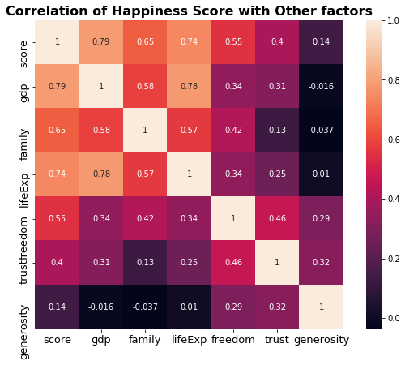
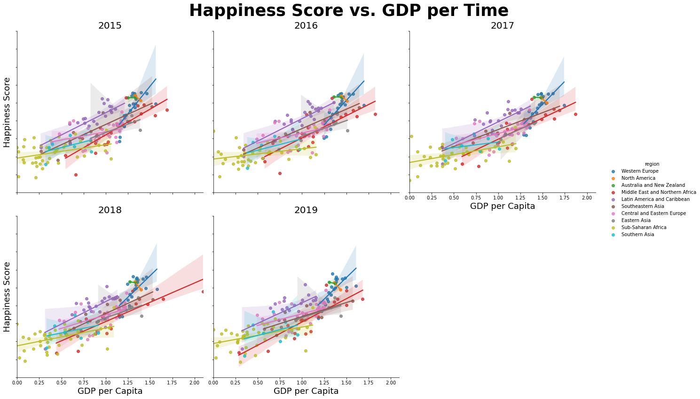
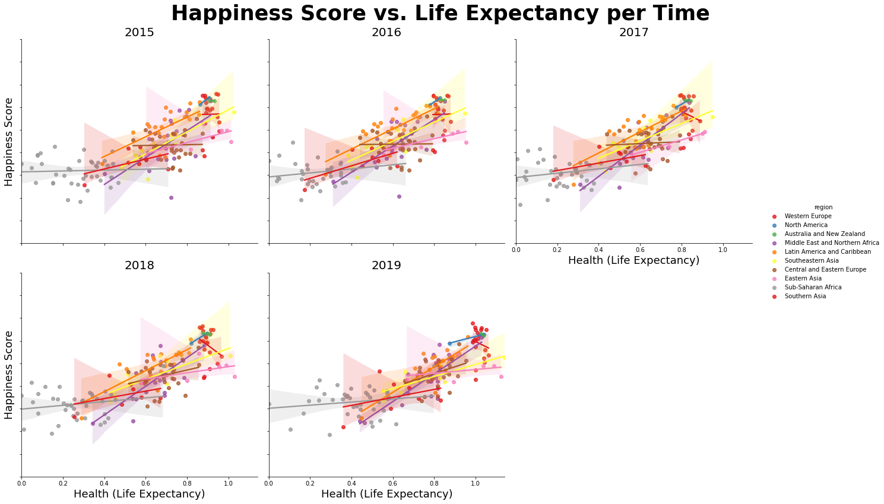
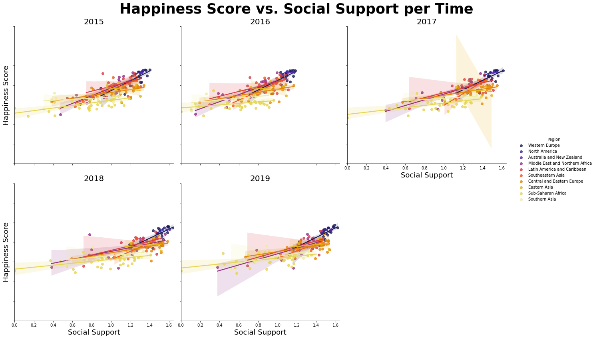
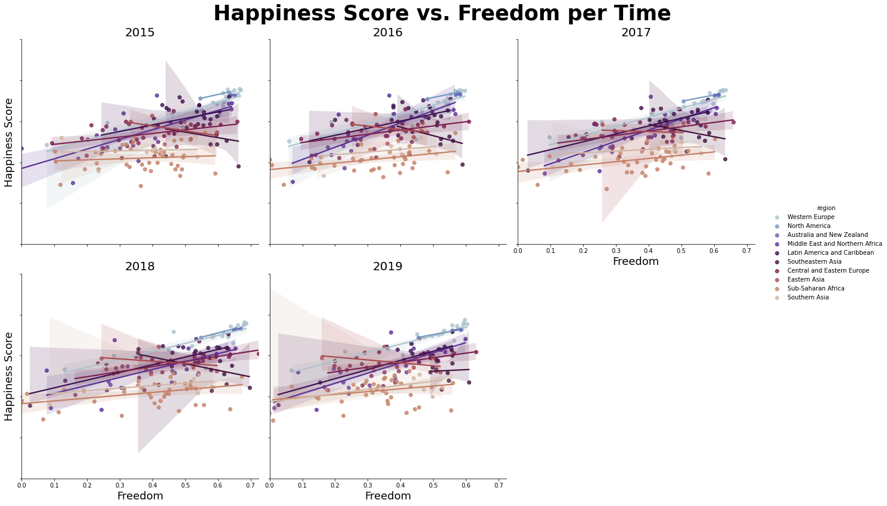
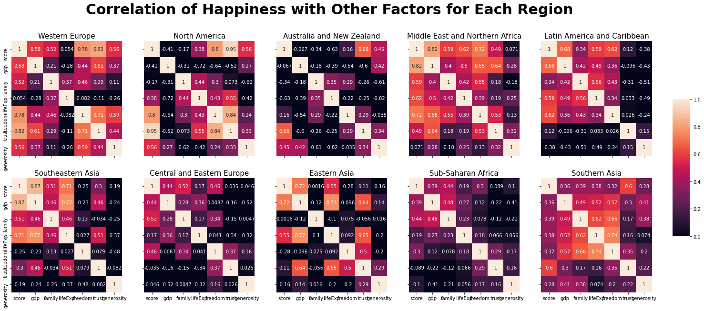
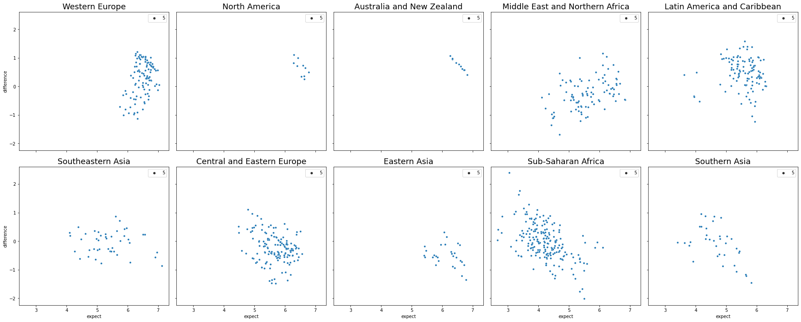
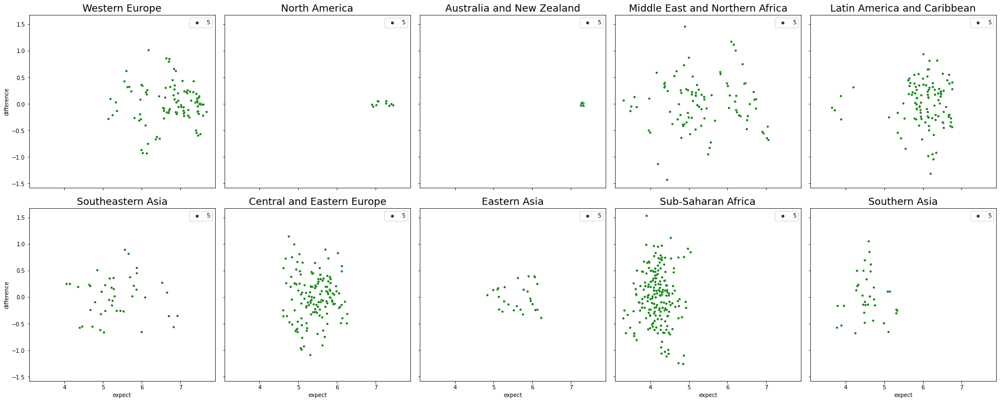

What Makes You Happy?
CMSC320: Intro to Data Science Final Tutorial Project
Fall 2020, Dahye Kang
Introduction
Happiness is one of the most important parts of human life. We feel happiness from pleasure or joy instantaneously and feel happiness from life satisfaction. Long-term life satisfaction is one of the most important factors in human life and influence how society is satisfied, not only the individual. Since 2012, based on the survey, people digitize the answer to measure happiness from life satisfaction.
Every year, the World Happiness Report releases global happiness data for each country. The reports review the state of happiness in the world today and show how the digitized data of happiness explains personal and national variations in happiness. Due to the efficiency and reliability of happiness measurements, the report is used in organizations and civil society to inform their policy-making decisions.
The scores are based on answers to the main life evaluation question asked in the poll from Gallup World Poll. The questions ask for answers in a range of 0 to 10 that zero is the worst possible life, and ten is the best possible life. In the data, the columns following the happiness score estimate the extent to which each of six factors -- economy (GDP per Capita), social support (family), healthy life expectancy, freedom, absence of corruption, and generosity; these explain why some countries rank higher than others.
In this instruction, we will focus on how each factor influences a high or low score, which leads to a high or low rank of happiness, and see the priority factor of happiness; Money, healthy, or freedom?
0. Getting Started
All the work is based on Python 3 (Python 3.9.0) with the following packages:
- pandas:
- a module that use to make a date frame, organize, and do other various work for data table; necessary for data handling.
- numpy:
- a module to use for multi-dimension array. Required when dealing with linear algebra calculation.
- matplotlib:
- a module to visualize the data; can make various graphs. We only use the pyplot from matplotlib package.
- seaborn:
- data visualization library based on matplotlib, but more various and high-level plot can use to visualize the data
- sklearn:
- a module for machine learning to use to learn and predict the model in various way; linear regression, classfication, etc.
If you are new to this, install the modules using pip
install [module_name] (this is one way to install a
module; there is various way to install).
Import the modules like this in the code:
import pandas as pd
import numpy as np
from matplotlib import pyplot as plt
from sklearn import linear_model
from sklearn.model_selection import cross_validate
import seaborn as sns
After calling all the necessary modules, we need to download the dataset. Each year, the World Happiness Report release the dataset, but as we cannot download all the file individually, we use kaggle.com to download already collected data for 2015 to 2019 by other users.
Download dataset in this link: World_Happiness
1. Data Processing
1.1 Reading Data from File
In this section, the goal is reading data from CSV files, reorganizing the data as we want. First, as each year data is in separate csv file, we need to read each csv file. Read the CSV files for each year by pd.read_csv(filename) method, and DO NOT add all data up yet; each file has differet columns and columns\' name. Also, the original CSV files do not have a column indicating year, I add the year column to the DataFrame using insert(location, column_name, column_value, allow_duplicate = True).
years = [2015, 2016, 2017, 2018, 2019]
# read 2015.csv
data_2015 = pd.read_csv(f"WorldHappiness/2015.csv", sep=",")
data_2015.insert(0, "year", 2015, True)
# read 2016.csv
data_2016 = pd.read_csv(f"WorldHappiness/2016.csv", sep=",")
data_2016.insert(0, "year", 2016, True)
# read 2017.csv
data_2017 = pd.read_csv(f"WorldHappiness/2017.csv", sep=",")
data_2017.insert(0, "year", 2017, True)
# read 2018.csv
data_2018 = pd.read_csv(f"WorldHappiness/2018.csv", sep=",")
data_2018.insert(0, "year", 2018, True)
# read 2019.csv
data_2019 = pd.read_csv(f"WorldHappiness/2019.csv", sep=",")
data_2019.insert(0, "year", 2019, True)
Before making data efficient, we need to check that each dataset\'s columns are different or equivalent. Here is the shape of each year dataset:
- 2015 Data Shape: (158, 13)
- 2016 Data Shape: (157, 14)
- 2017 Data Shape: (155, 13)
- 2018 Data Shape: (156, 10)
- 2019 Data Shape: (156, 10)
Each year data has some different columns, so to make all year data to one, we only use the columns that exist in all data set. Below is the table showing which year\'s data is missing or named differently:
| 2015 | 2016 | 2017 | 2018 | 2019 |
|---|---|---|---|---|
| Country | Country | Country | Country or region | Country or region |
| Region | Region | - | - | - |
| Happiness Rank | Happiness Rank | Happiness.Rank | Happiness Rank | Happiness Rank |
| Happiness Score | Happiness Score | Happiness Score | Happiness Score | Happiness Score |
| Standard Error | - | - | - | - |
| - | Lower Confidence Interval | Whisker.low | - | - |
| - | Upper Confidence Interval | Whisker.low | - | - |
| Economy (GDP per Capita) | Economy (GDP per Capita) | Economy..GDP.per.Capita. | GDP per capita | GDP per capita |
| Family | Family | Family | Social support | Social support |
| Health (Life Expectancy) | Health (Life Expectancy) | Health..life.Expectancy. | Healthy lift expenctancy | Healthy life expectancy |
| Freedom | Freedom | Freedom | Freedom to make life chices | Freedom to make life chices |
| Trust (Government Corruption) | Trust (Government Corruption) | Trust..Government.Corruption. | Perceptions of Corruption | Perceptions of Corruption |
| Generosity | Generosity | Generosity | Generosity | Generosity |
| Dystopia Residual | Dystopia Residual | Dystopia.Residual | - | - |
In summary, we will use the columns: country, region, rank, score, gdp, family, lifeExp, freedom, trust, and generosity. There is no region data in 2017, 2018, and 2019, but the region data is useful to analyze the data by grouping it, we will merge the 2015 and 2016 region data to 2017, 2018, and 2019.
1.2 Fill the Empty Column
To get the region data from 2015 and 2016, sort the two datasets by Country name, and extract only the Country and Region columns. Then, the 2015 data and 2016 data have different length, so we need to consider the case that the countries only exist in one of the dataset. To prevent loss, we will merge the two region data as outer option in pd.merge function.
#Sort data by Country
sort_2016 = data_2016.sort_values(by="Country")
sort_2015 = data_2015.sort_values(by="Country")
#Get the Country and Region columns only
region_2016 = sort_2016[["Country", "Region"]]
region_2015 = sort_2015[["Country", "Region"]]
#Merge two
region = pd.merge(region_2015,region_2016, how="outer")
- region and country shape: (164, 2)
Now, the region has more region data than data from 2015 and 2016. After making the region dataset, we will apply this region data to different year datasets. The 2018 and 2019 dataset have different column name for Country as Country or region (check the above column list table), specifing the merge option that the column in left dataset to merge is \"Country or region\" and the column in right dataset to merge is \"Country\". The merge between the 2017, 2018, and 2019 data and region data is inner merge (default); it will not include the row which cannot find corresponding country and region in region data.
data_new_2017 = pd.merge(data_2017, region)
data_new_2018 = pd.merge(data_2018, region, left_on="Country or region", right_on="Country")
data_new_2019 = pd.merge(data_2019, region, left_on="Country or region", right_on="Country")
The outcome dataset shows the shape as:
- 2015 New Data Shape: (158, 13)
- 2016 New Data Shape: (157, 14)
- 2017 New Data Shape: (153, 14)
- 2018 New Data Shape: (154, 12)
- 2019 New Data Shape: (152, 12)
1.3 Extract and Rename
As above I said, we only need the data that are all common in every year data.
#columns list to want to use
cols = ["year","country","region","rank","score","gdp","family","lifeExp","freedom","trust","generosity"]
#loop each year dataset and append the necessary data to list
data = []
for i, row in data_2015.iterrows():
app = row[["year","Country","Region","Happiness Rank","Happiness Score","Economy (GDP per Capita)",
"Family","Health (Life Expectancy)","Freedom","Trust (Government Corruption)","Generosity"]]
data.append(app.array)
for i, row in data_2016.iterrows():
data.append(row[["year","Country","Region","Happiness Rank","Happiness Score","Economy (GDP per Capita)",
"Family","Health (Life Expectancy)","Freedom","Trust (Government Corruption)",
"Generosity"]].array)
for i, row in data_new_2017.iterrows():
data.append(row[["year","Country","Region","Happiness.Rank","Happiness.Score",
"Economy..GDP.per.Capita.","Family", "Health..Life.Expectancy.","Freedom",
"Trust..Government.Corruption.","Generosity"]].array)
for i, row in data_new_2018.iterrows():
data.append(row[["year","Country or region","Region","Overall rank","Score",
"GDP per capita", "Social support", "Healthy life expectancy",
"Freedom to make life choices", "Perceptions of corruption", "Generosity"]].array)
for i, row in data_new_2019.iterrows():
data.append(row[["year","Country or region","Region","Overall rank","Score","GDP per capita",
"Social support", "Healthy life expectancy", "Freedom to make life choices",
"Perceptions of corruption", "Generosity"]].array)
data= pd.DataFrame(data,columns=cols)
data.head()
| year | country | region | rank | score | gdp | family | lifeExp | freedom | trust | generosity |
|---|---|---|---|---|---|---|---|---|---|---|
| 0 | 2015 | Switzerland | Western Europe | 1 | 7.587 | 1.39651 | 1.34951 | 0.94143 | 0.66557 | 0.41978 |
| 1 | 2015 | Iceland | Western Europe | 2 | 7.561 | 1.30232 | 1.40223 | 0.94784 | 0.62877 | 0.14145 |
| 2 | 2015 | Denmark | Western Europe | 3 | 7.527 | 1.32548 | 1.36058 | 0.87464 | 0.64938 | 0.48357 |
| 3 | 2015 | Norway | Western Europe | 4 | 7.522 | 1.45900 | 1.33095 | 0.88521 | 0.66973 | 0.36503 |
| 4 | 2015 | Canada | North America | 5 | 7.427 | 1.32629 | 1.32261 | 0.90563 | 0.63297 | 0.32957 |
Now, let's see how the data is related.
2. Data Exploration and Analysis
The goal of this section is analyzing data as finding the relation of six factors and happiness score. To see the global trend of relation with factors and score, we plot the heatmap.
2.1 Global Trend
To the dataset what we want to see the correlation, use the corr() and return a correlation matrix. Using the seaborn, plot the heatmap given the values as the correlation matrix.
#Corrleation Matrix
corrMatrix = data[["score","gdp","family","lifeExp","freedom","trust","generosity"]].corr()
#plot heatmap
plt.figure(figsize = (10, 7))
sns.heatmap(corrMatrix, annot=True, square=True)
plt.title("Correlation of Happiness Score with Other factors", fontweight = "bold", fontsize = 16)
plt.xticks(fontsize=13)
plt.yticks(fontsize=13)
plt.show()

The heatmap shows the correlations with the level of strongness through the color difference. The color bar on right side indicate which color is closed to 1 or 0. According to the heatmap, the score shows the correlation coefficient as 0.79 for gdp, 0.65 for family, 0.74 for lifeExp, 0.55 for freedom, 0.4 for trust, 0.14 for generoisty. The order of strong coefficient is GDP > Family > Life Expectency > Freedom > perceptions of corruption > Generoisty.
In the Statistics, above 0.8 correlation coefficient is strong, above 0.5 and below 0.8 correlation coefficient is consider moderate, and below 0.5 correlation coefficient is weak. Then, the gdp, family, lifeExp, and freedom is considered moderate coefficient with no strong coefficient. Leave the weak correlation coefficient, we will see that how the four variable is related to score with region indication.
2.2 Happiness Score vs. GDP
We will plot the multi linear regression line with scatter plot using the lmplot in seaborn. The first plot we will look at is happiness score vs. GDP. Set x value as gdp and y value is score with hue as region (show regions in different colors). Set col is year and col_wrap to 3 which are showing graph for each year data with three columns. Then we can plot the 5 subplots of scatter plot with linear regression line for each region.
plt.figure(figsize=(12, 10))
g = sns.lmplot(data = data, y = "score", x = "gdp", hue = "region", col = "year", col_wrap = 3, height = 6)
g.fig.suptitle("Happiness Score vs. GDP per Time", fontsize = 35, fontweight = "bold")
g.set_titles(col_template="{col_name}", size = 20)
g.set_yticklabels(fontsize = 10)
g.set_axis_labels("GDP per Capita", "Happiness Score", size = 18)
g.fig.subplots_adjust(wspace = 0.3, hspace = 0.4, top = 0.90, left = 0.1)
g.tight_layout()
plt.show()

The plot shows that the tendency of higher GDP with higher happiness score in every year. If we see the each region\'s regression line, some regions do not follow the global tendency. The North America and Australia and New Zealand show that their score does not get high by high GDP. The Western Europ shows the steep slope among other regions which means high gdp countries have high score of happiness. Compared to it, the Sub-Saharan Africa and Southern Asia show the GDP does not influence much to the high score.
2.3 Happniess Score vs. Life Expectency
Do the same way with the modification of x variable to lifeExp
plt.figure(figsize=(12,10))
g = sns.lmplot(data=data, y="score", x="lifeExp", hue="region", palette="Set1", col = "year", col_wrap = 3, height=6)
g.fig.suptitle("Happiness Score vs. Life Expectancy per Time", fontsize = 35, fontweight = "bold")
g.set_titles(col_template="{col_name}", size = 20)
g.set_yticklabels(fontsize = 10)
g.set_axis_labels("Health (Life Expectancy)", "Happiness Score", size = 18)
g.fig.subplots_adjust(wspace = 0.3, hspace = 0.4, top = 0.90, left = 0.1)
g.tight_layout()
plt.show()

The overall trend is that with higher lifeExp, the higher happiness score is which is smaller than GDP slope. The Sub-Saharan Africa, Central and Eastern Europe, and Western Europe show that same or similar score with various lifeExp value meaning lifeExp does not influence much on happiness. However, Middle East and Northern Africa and Latin America and Caribbean show that high lifeExp reflect to score as high.
2.4 Happiness Score vs. Social Support
Do same as above plots with the modification of x variable.
plt.figure(figsize=(12,10))
g = sns.lmplot(data = data, y ="score", x = "family", hue = "region", palette="CMRmap", col = "year", col_wrap = 3, height=6)
g.fig.suptitle("Happiness Score vs. Social Support per Time", fontsize = 35, fontweight = "bold")
g.set_titles(col_template="{col_name}", size = 20)
g.set_yticklabels(fontsize = 10)
g.set_axis_labels("Social Support", "Happiness Score", size = 18)
g.fig.subplots_adjust(wspace = 0.3, hspace = 0.4, top = 0.90, left = 0.1)
g.tight_layout()
plt.show()

This is also shows the high social support with high score but not much as the lifeExp graph. Most of country does not reflect the high happiness score with high social support, but the Western Europe reflect it.
2.5 Happiness Score vs. Freedom
Do same as above plots with modification of x variable
plt.figure(figsize=(12,10))
g = sns.lmplot(data=data, y="score", x="freedom", hue="region", palette="twilight", col = "year", col_wrap = 3, height=6)
g.fig.suptitle("Happiness Score vs. Freedom per Time", fontsize = 35, fontweight = "bold")
g.set_titles(col_template="{col_name}", size = 20)
g.set_yticklabels(fontsize = 10)
g.set_axis_labels("Freedom", "Happiness Score", size = 18)
g.fig.subplots_adjust(wspace = 0.3, hspace = 0.4, top = 0.90, left = 0.1)
g.tight_layout()
plt.show()

This shows the weak relations between happiness score and freedom that most of country shows similar happiness score whatever the freedom gets.
2.6 Heatmap per Region
The above plots show that the factors influenced to the happiness score are different for each region. To see the correlation of factors and score for each region, we will plot the 10 subplots of heatmaps.
#region list - 10 regions
region = data["region"].unique()
#subplots of 2x5 matrixs
fig, ax = plt.subplots(2, 5, figsize = (25, 10), constrained_layout = True, sharey = True, sharex = True)
j = 0
#show only one color bar in given location
cbar_ax = fig.add_axes([.9, .3, .02, .4])
#loop over the region list
for i, loc in enumerate(region):
if i>0 and i%5 == 0:
j+=1
#correlation matrix for corresponding region
corrMatrix = data[data["region"]==loc][["score","gdp","family","lifeExp","freedom","trust","generosity"]].corr()
#heatmap for correlation matrix
sns.heatmap(corrMatrix, cbar=i == 0, ax= ax[j][i%5],vmin=0,annot=True, cbar_ax=None if i else cbar_ax)
ax[j][i%5].set_title(loc, loc = "center", fontsize = 15, fontweight = 10)
fig.tight_layout(rect=[0, 0, .98, 1])
fig.suptitle("Correlation of Happiness with Other Factors for Each Region", fontsize = 30, fontweight = "bold")
plt.show()

The chart listed the top three factors which is high correlation for
each region (indicate strong coefficient as
<span style="color:#EF9342">color</span>, moderate
coefficient as
<span style="color:#C70039">color</span>):
| Region | First | Second | Third |
|---|---|---|---|
| Global | GDP | lifeExp | Social Support |
| Western Europe | trust | freedom | GDP |
| North America | trust | freedom | generosity |
| Austraila and New Zealand | trust | generosity | freedom |
| Middle East and Northern Africa | GDP | freedom | lifeExp |
| Latin America and Caribbean | GDP | freedom | lifeExp |
| Southeastern Asia | GDP | lifeExp | social support |
| Central and Eastern Europe | family freedom | GDP | |
| Eastern Asia | GDP | lifeExp | trust |
| Sub-Saharan Africa | family | GDP | freedom |
| Southern Asia | trust | family | lifeExp |
Unlike the Global's strongest coefficient is GDP, the regions follow it is only 4 out of 10. Assume that the country has enough economy growth (high GDP), consider the perceptions of corruption and freedom to the important factors for happiness; perceiving social values are important. Also, for the country considered the GDP as first, they are also care about the healthy life expectancy. So, I can assume that importance of ecomonic growth comes with factor of healty life expectancy for the happiness.
3. Model Prediction
Based on above interpretation, We will find the model for global and plot the residual scatter plot. Also, we will find the model per each region, and see how well they predict compared to using global model. All the finding is only based on top three facters for every model.
3.1 Global Model
We will use the LinearRegression method under sklearn.linear_model for multi linear regression. For the global model, the x variable is gdp, lifeExp, and family and y variable is score. Apply x and y to linEq.fit(x,y) and get the slope and intercept.
linEq = linear_model.LinearRegression()
x = data[["gdp","lifeExp","family"]]
y = data["score"]
linEq.fit(x,y)
slope = linEq.coef_ #slope coefficient list
intercept = linEq.intercept_
print(f"Equation: score = {intercept:.4f} + {slope[0]:.4f}*(gdp) + {slope[1]:.4f}*(lifeExp) + {slope[2]:.4f}*(family)")
Equation: score = 2.6423 + 1.2529*(gdp) + 1.1586*(lifeExp) + 0.8188*(family)
Now we get the expected y value based on original x using linEq.predict(x), and calculate residual by subracting original y to expected y value. Then, add region column and original y column; it will be used for plotting per each region.
predict_y = linEq.predict(x)
residual = np.subtract(y, predict_y)
residual = pd.DataFrame(np.array(residual), columns=["difference"])
residual["region"] = data["region"]
residual["original"] = y
residual["expect"] = predict_y
residual.head()
| difference | region | original | expect |
|---|---|---|---|
| 0 | 0.999329 | Western Europe | 7.587 |
| 1 | 1.040749 | Western Europe | 7.561 |
| 2 | 1.096641 | Western Europe | 7.527 |
| 3 | 0.936365 | Western Europe | 7.522 |
| 4 | 0.990811 | North America | 7.427 |
Let's see how global model works in each region.
We will plot 10 subplots of residual plots using scatterplot.
#region list
region = data["region"].unique()
fig, ax = plt.subplots(2, 5, figsize = (25, 10), constrained_layout = True, sharey = True, sharex = True)
j = 0
for i, loc in enumerate(region):
if i>0 and i%5 == 0: #update row
j+=1
#scatter plot
sns.scatterplot(x="expect", y="difference", size=5, palette="ch:r=-.2,d=.3_r", ax= ax[j][i%5], data=residual[residual["region"]==loc])
ax[j][i%5].set_title(loc, loc = "center", fontsize = 18, fontweight = 10)
plt.show()

Only the Southeastern Asia show acceptable residual plot, and rest of plot show the pattern which mean the model is not working well.
To see the accurate score of model prediction, use the cross_validate(regression_method, x, y), and get the test score of it with default 5-fold CV.
result = cross_validate(linEq, x, y)
global_square = np.array(result["test_score"])
print("R-Squared Score for global model in Avg: ",global_square.mean())
3.2 Predict per Region
Now we will find the model for each region based on top three factors for each. Use a dict to save the top three factor for each region, and find the model like above.
# make a table for top three factors each
top_three = {"region":region,
"first":
["trust","trust","trust","gdp","gdp",
"gdp","family","gdp","family","trust"],
"second":
["freedom","freedom","generosity","freedom",
"freedom","lifeExp","freedom","lifeExp","gdp",
"family"],
"third":
["gdp","generosity","freedom","lifeExp","lifeExp",
"family","gdp","trust","freedom","lifeExp"]}
top_three = pd.DataFrame(top_three)
top_three.head()
| region | first | second | third |
|---|---|---|---|
| 0 | Western Europe | trust | freedom |
| 1 | North America | trust | freedom |
| 2 | Australia and New Zealand | trust | generosity |
| 3 | Middle East and Northern Africa | gdp | freedom |
| 4 | Latin America and Caribbean | gdp | freedom |
For each region, it get the top three factors list, do the multi linear regression, predict y value based on original x, get the score of prediction, and plot a scatter plot for residual vs. predicted value.
fig, ax = plt.subplots(2, 5, figsize = (25, 10), constrained_layout = True, sharey = True, sharex = True)
j = 0
score = []
for i, loc in enumerate(region):
if i>0 and i%5 == 0: #update row
j+=1
#get three factors for certain region
factors = top_three[top_three["region"]==loc][["first","second","third"]]
#multi linear regression
x = data[data["region"]==loc][factors.to_numpy().flatten()]
y_loc = data[data["region"]==loc]["score"]
linEq.fit(x, y_loc)
#predict
predict_y = linEq.predict(x)
residual = np.subtract(y_loc, predict_y)
residual = pd.DataFrame(np.array(residual), columns=["difference"])
residual["original"] = y_loc.reset_index(drop=True)
residual["expect"] = predict_y
#get the score of prediction
score.append(linEq.score(x,y_loc))
#scatter plot for residual vs. predicted value
sns.scatterplot(x="expect", y="difference", size=5, color="green", ax= ax[j][i%5], data=residual)
ax[j][i%5].set_title(loc, loc = "center", fontsize = 18, fontweight = 10)
plt.show()

This graph shows much scattered points in each plot, which means the model is working better than just using global model. Still, the Central and Eastern Europe and Sub-Saharan Africa tend to clustered together vertically, it is not the best fit model to them.
Unlike the global model, we do not use cross-validate due to small number of data for each region. Below is the R-Square score for each region:
R-Squared Score for Western Europe 0.7637
R-Squared Score for North America 0.9650
R-Squared Score for Australia and New Zealand 0.4905
R-Squared Score for Middle East and Northern Africa 0.7752
R-Squared Score for Latin America and Caribbean 0.6679
R-Squared Score for Southeastern Asia 0.7681
R-Squared Score for Central and Eastern Europe 0.4753
R-Squared Score for Eastern Asia 0.7523
R-Squared Score for Sub-Saharan Africa 0.2967
R-Squared Score for Southern Asia 0.4608s
It shows that the model fit well for North America, and the Wstern Europe, Middle East and Northern Africa, Southeastern Asia, and Eastern Asia show the model is acceptable. It does not work well for Sub-saharan Africa.
Conclusion
The main goal of instruction is finding out which factors is most reflected in the happiness score. We used the top three factors to see how the model fit, and get various score of prediction for each region. Then, let\'s think about why some region get high score and others not.
In the data analysis step, through the heatmaps per region, we check that which factors are strong correlation coefficient or not. The North America shows first and second factors are strong coefficient, and thrid factor is moderate. This means all three factors highly related to happiness score. So, the prediction using these factors shows 0.965 R-Squared score. Contrast to it, the Sub-Saharan Africa\'s top three factors are all weak correlation coefficient. Leading to it, the score is also the lowest, meaning that the factors does not related to happiness score much. These brings the idea that the higher correlation coefficient is, the higher score get from the prediction based on the variable.
If we consider this condition, the Western Europe get the highest influence to the happiness score from perception of corruption, the North America get the highest influence from perception of corruption and freedom, the Middle East and Northern Africa get the highest influence from economy (GDP per Capita), and also the Southeastern Asia get the highest influence from economy (GDP per Capita). The rest of region has the coefficient of moderate or weak, so it will not reflected well in the happiness score.
Through the insctruction, we explore the data processing, data analyzing, and model prediction based on data. Hope this is useful information, and Thank you for sharing time to read.
Thank you.